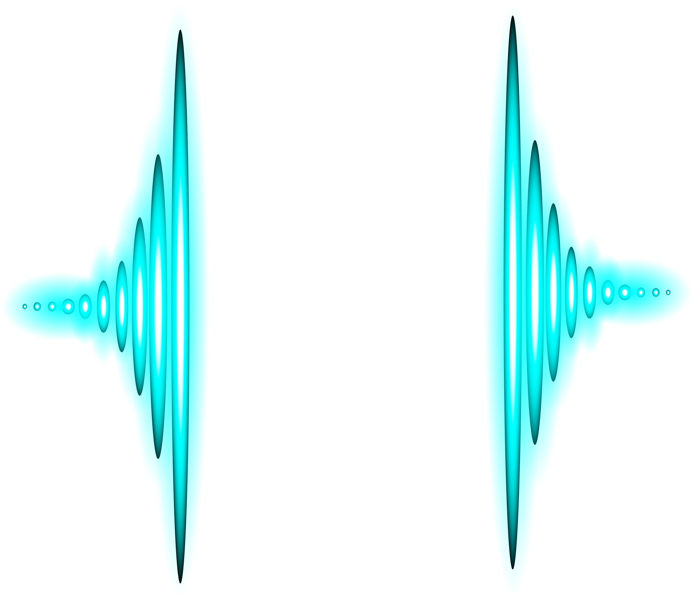

Vibration
de l'oreille interne
l'oreille
Le système auditif est l'un des sens les plus fragilisés au cours de la vie, car il possède un nombre limité de cellules sensorielles qui ne se renouvellent pas une fois endommagées. Il est chargé de l'ouïe.
Il est composé de 3 parties :
-L'oreille externe qui permet de recevoir les sons.
-L'oreille moyenne qui est composée de 3 osselets (marteau, étrier et enclume) qui transmettent les
vibrations à l'oreille interne.
-L'oreille interne qui est la partie la plus profonde du système auditif, située au bout de la chaîne.
Elle
renferme la cochlée et ses cellules sensorielles chargées de percevoir les sons.
réduction des risques
seuil en décibel
foret tranquille
conversation
concert
decollage d'avion
decollage d'une fusee
Veille à ton état de fatigue car il peut fragiliser ton système auditif.
Éloigne-toi des enceintes les fréquences basses seront moins fortes, mais tu auras une meilleure perception globale du son.
Utilise l'équipement mis à disposition lors des événements.
Fais attention à l'influence de la consommation de produits psychoactifs.
Évalue le niveau sonore.
le materiels
Bouchons d'oreille en mousse
5 à 10 €.
Les bouchons d'oreille en mousse sont un moyen efficace et peu coûteux de protéger vos oreilles contre le bruit, l'eau et les débris. Ils sont fabriqués à partir de mousse souple et peuvent être insérés facilement dans le conduit auditif, offrant ainsi une protection confortable et pratique.

Bouchons à filtre acoustique
12 à 20 €
Les bouchons d'oreille à filtre acoustique sont un moyen efficace et réutilisable de protéger vos oreilles contre les niveaux sonores excessifs. Ils sont équipés d'un filtre qui atténue les bruits dangereux tout en permettant une communication claire et une perception des sons environnants.

Bouchons d'oreilles sur mesure
Plus de 100 €
Les bouchons d'oreille sur mesure offrent une protection auditive personnalisée pour une efficacité et un confort optimaux. Ils sont fabriqués à partir d'une empreinte de votre conduit auditif, offrant ainsi un ajustement parfait et une réduction du bruit optimale. Ils sont faits par un audioprothésiste.

Casques anti-bruit passifs
15 à 50 €.
Le casque anti-bruit passif est un dispositif de protection auditive qui utilise des matériaux isolants pour réduire les niveaux de bruit. Il est efficace pour atténuer les bruits de fond dans les environnements bruyants, mais il n'offre pas de fonctionnalités supplémentaires comme la suppression active du bruit.

casque anti-bruit actifs
à partir de 50€
Les casques anti-bruit actifs sont des dispositifs électroniques conçus pour réduire les bruits ambiants en générant une onde sonore opposée. Ils disposent d'un système de traitement du signal pour détecter et neutraliser les bruits extérieurs, ce qui les rend utiles dans les environnements bruyants.
bouchon en cire
5-10euro€
Les bouchons d'oreille en cire sont un moyen efficace de protéger vos oreilles contre le bruit, l'eau et les débris. Ils sont fabriqués à partir de cire d'abeille naturelle et peuvent être façonnés pour s'adapter confortablement à votre conduit auditif, offrant ainsi une protection optimale.
les risques
Les risques auditifs sont liés à l'exposition prolongée à des niveaux sonores élevés. Les dommages auditifs
peuvent être temporaires ou permanents, et peuvent entraîner des acouphènes, une perte auditive ou même une
surdité.
Les sources courantes de bruit nocif incluent la musique forte, les machines industrielles et les
outils électriques. Il est important de protéger vos oreilles avec des bouchons d'oreille ou des casques
antibruit, et de limiter votre exposition aux niveaux sonores élevés autant que possible.
Les personnes qui
travaillent dans des environnements bruyants devraient être conscientes des risques et suivre les protocoles
de sécurité appropriés pour minimiser leur exposition aux niveaux sonores élevés.
nos stands